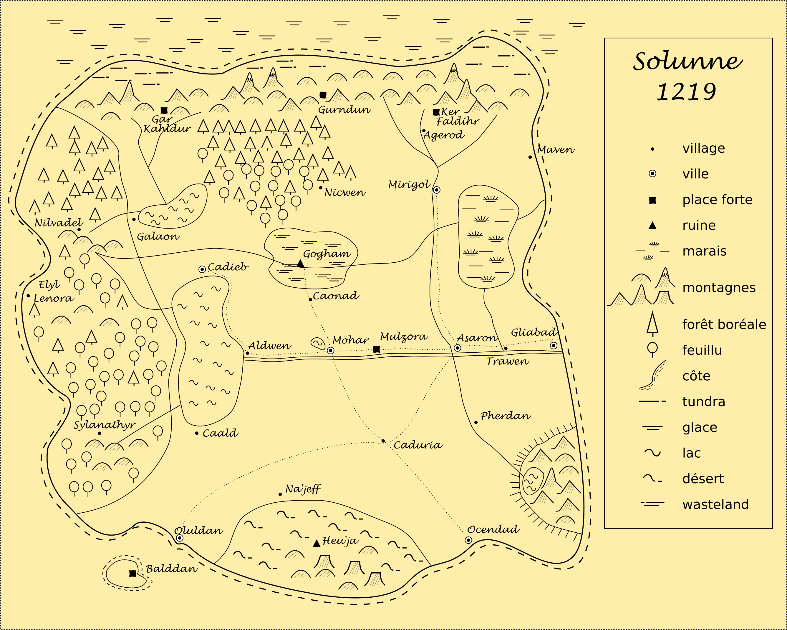

L’unité de distance pour les voyages est la lieue, soit la distance de marche en une heure (environ 4 kilomètres), il y a 150 lieux entre le Long fleuve et Gogham, soit environ 20 jours de marche.
Le royaume de Solunne s’étend sur presque l’ensemble du continent, seules les régions les plus sauvages, peu habitées par les humains, la grande forêt à l’ouest, les montagnes au nord, le grand désert au sud, les montagnes et le grand marais à l’est, en sont exclues. D’autres continents existent dans le monde de Solunne, mais très peu de navires ont pu réussir de tels voyages en mer.
La grande forêt de l'ouest est la plus vaste forêt du continent. Des hommes fuyant la civilisation et des orcs y trouvent refuge, mais en son coeur se trouvent les derniers territoires des elfes, qu’ils partagent avec d’autres créatures sylvestres. Très peu d’humains l’ont traversé pour atteindre la mer de l’ouest.
Les montagnes du nord, dont les plus hauts sommets sont couverts de neige éternelle, sont les plus hautes montagnes du continent. Elles hébergent les forteresses des nains, mais elles sont également peuplées d’orcs et d’autres créatures sauvages. Entre les montagnes et la mer glacée du nord se trouvent de grandes steppes où vivent quelques tribus coupées du royaume.
L’immense marais à l'est du royaume, selon les dires des bardes, cacherait les ruines d'un ancien empire qui a sombré dans l'oubli avant même la fondation du royaume. Réputé pour être infesté de morts-vivants, même les orcs évitent de s’y installer en permanence.
Les montagnes de l’est sont la région du continent qui est le plus entouré de mystère. Plusieurs légendes parlent de ces montagnes comme d'un grand lieu de ressourcement et de quête spirituelle. Plusieurs pèlerins partis vivre dans ces montagnes ne sont revenus
que plusieurs années plus tard, complètement transformés. Selon des légendes, un monastère habité par créatures à la peau argentée se trouve au plus haut sommet de ces montagnes.
Le grand désert du sud, un lieu d'exil et de perdition est évité par tous les voyageurs sensés, même si de nombreuses légendes de cités disparues et de trésors sont connues de tous les aventuriers. Au coeur du grand désert se trouvent quelques grands volcans, mais les dernières éruptions remontent à plusieurs années. Même s’il est aride et dangereux, plusieurs tribus vivent dans le désert et elles se rendent dans les villes les plus près pour faire du commerce.
Les terres royales de Gogham sont une vaste région du royaume où on retrouvait jadis le coeur du royaume, elle a été abandonnée pendant des siècles suite à la guerre d’Uter pour être de nouveau explorée et colonisée à partir de l’an 1195. L’arrivée de la princesse et de nombreux aventuriers dans la région en 1200, a engendré une période de turbulence dans tout le royaume, qui s’est arrêtée en 1205 lors la région de Gogham fut détruite par un cataclysme dont la cause demeure encore mystérieuse. Non seulement on croit que tous ceux qui s’y trouvaient ont péri, même la végétation a été grandement détruite. Ceux qui osent s’y aventurer depuis, en reviennent atteints d’une forme de peste que ni les guérisseurs ni les prêtres ne semblent capable de guérir.
La vieille route, construite il y a, selon les historiens, plus d'un millénaire débute sa
course à partir d’un ancien pont de pierre traversant le fleuve, où la ville de Möhar fut plus tard établie, et se rend jusqu’à la région de Gogham. Elle est maintenant très rarement empruntée au-delà du village de Canoad.
Les eaux limpides du lac doré alimentent la citée de Möhar grâce à un ingénieux aqueduc. Cette magnifique étendue d'eau doit son nom au reflet presque parfait de Zora qu'il produit.
Puisque selon la loi du royaume nul ne peut pénétrer les eaux du lac et que les seules
embarcations autorisées sont les longues pirogues sacrées de Zora utilisées dans les
grandes cérémonies religieuses (une tradition qui s’est arrêtée sous le roi Sigwald), le lac est presque toujours d'un calme plat.
Le Long fleuve est le principal cours d'eau du royaume, c'est ce qui permet aux lointains voyageurs de la mer de l'est de pénétrer à l'intérieur des terres du royaume. Sur ses rives se trouvent les plus grandes seigneuries, car les terres y sont très fertiles. Le fleuve profond et large, mais la pêche n'y est cependant plus très bonne, ce filon a été depuis déjà si longtemps exploité que les pêcheurs doivent atteindre la mer pour remplir leur filet. Des légendes parlent de créatures marines terrifiantes qui remontent parfois le fleuve, mais l'eau douce les empêcherait de survivre bien longtemps.
La rivière obscure qui traverse complètement le royaume d'ouest en est tient son nom de
son origine, puisque sa source proviendrait d'un lac souterrain au cœur de la grande
forêt. Avant de rejoindre le Long fleuve près de la mer, cette rivière traverse entre autres
les bois de Gogham. Plusieurs histoires sont racontées à propos des gens qui
s'abreuvent de cette eau sur une longue période de temps.
La cité de Möhar est la capitale du royaume depuis plusieurs siècles, elle se trouve au centre du continent. Le Long fleuve coupe la ville en deux et sert d'égout, le fort courant rend la chose tolérable. Du côté nord du fleuve se trouvent les grands quartiers de la ville, le palais royal, les ruines de la grande cathédrale de Zora. Le palais, une soi-disant réplique du grand palais de l'ancienne Gogham, est une belle et grande construction, mais il a d'abord et avant tout été bâti comme pour être une forteresse imprenable et non pour impressionner par sa splendeur. Du côté sud, on retrouve le port, les tavernes louches et de nombreux taudis, mais on y retrouve aussi la grande place publique et la ligue des guildes y tient résidence. Le conseil des nobles quant à lui se réunit dans un grand manoir près du palais et la prison royale se trouve sur une petite île au centre du fleuve, de grands brasiers y brûlent toujours la nuit. Des deux côtés de la ville se trouvent des tours servant de fort et de point d'ancrage aux gigantesques chaînes permettant de fermer l'accès à la ville par la voie fluviale.
Entre Möhar et la mer de l'est, sur les rives du Long fleuve se trouve le temple-forteresse Mulzora. Une des rares constructions du royaume à avoir survécu à la guerre d'Uter, elle est le siège de l'Ordre sacré de la Sainte Flamme de Zora. Ces paladins de Zora sont élevés et formés entre ces murs, ils apprennent l'art du combat et la foi de Zora. Certains d'entre eux deviendront des combattants sacrés et d'autres passeront leur vie à la citadelle comme gardien et geôlier. En effet Mulzora est non seulement le bastion de ces hommes preux, mais aussi la prison la plus redoutée de tout le royaume. Depuis que le roi Sigwald a fait détruire la Grande cathédrale, le haut clergé de Zora, mené par le cardinal Thorold, y a trouvé refuge.
Asaron est la deuxième ville en importance dans le royaume au point de vue politique et économique, elle est située à l'est de Möhar, aussi sur les berges du Long fleuve. Oluldan, la est la plus riche ville du sud du royaume, son principal attrait est son grand marché visité par des les marchands qui viennent grand désert. Sur une île tout près se trouve la forteresse-prison Balddan. Mirigol est la principale ville minière du continent et elle est maintenant la capitale des terres du nord. Gliabad est une importante ville portuaire, située à l'embouchure du Long fleuve et de la mer de l'est, c'est la porte d'entrée maritime du royaume. Cadieb, sur la rive nord du grand lac, est la ville située la plus à l'ouest du royaume, très bien fortifiée, ses habitants craignant toujours un assaut depuis la grande forêt. Ocendad, maintenant une cité-état, la ville la plus pauvre et la plus populeuse du continent, est aussi une ville côtière.
Caonad est un tout petit village établi il y a une vingtaine d’années sur la vieille route. Caduria est connu pour sa grande foire où des paysans de toutes les terres environnantes se rendent au solstice d'été. Maven est un petit village de pêcheur situé au nord de la côte. Trawen est un important village des terres fécondes de l'est, il est situé sur la rive sud du Long fleuve. Agerod est un village fortifié servant de base aux troupes qui surveillent la présence d’orc, mais qui sert aussi de comptoir commercial avec les nains. Galon, situé près la grande forêt, sur les rives du lac du nord, est aussi un lieu d’échange important de ressources naturelles. Nicwen est un petit village isolé à l’orée de la forêt du nord. Caald est un village situé sur une colline surplombant la rive sud du grand lac. Aldwen, sur la rive est du grand lac, est une halte importante sur la route entre Möhar et Cabieb, plusieurs riches habitants de la capitale s’y réfugient durant l’été. Pherdan, sur les abords de la rivière blanche qui traverse le royaume du nord, est au pied du plateau des montagnes de l’est, c’est de là que plusieurs pèlerins entament leur périple. Na’jeff est un petit village aux abords du grand désert d’où parte la plupart des expéditions vers ce dernier.